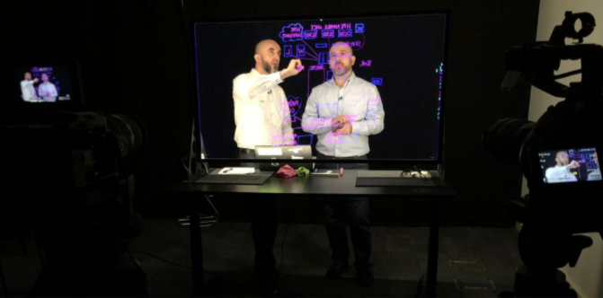
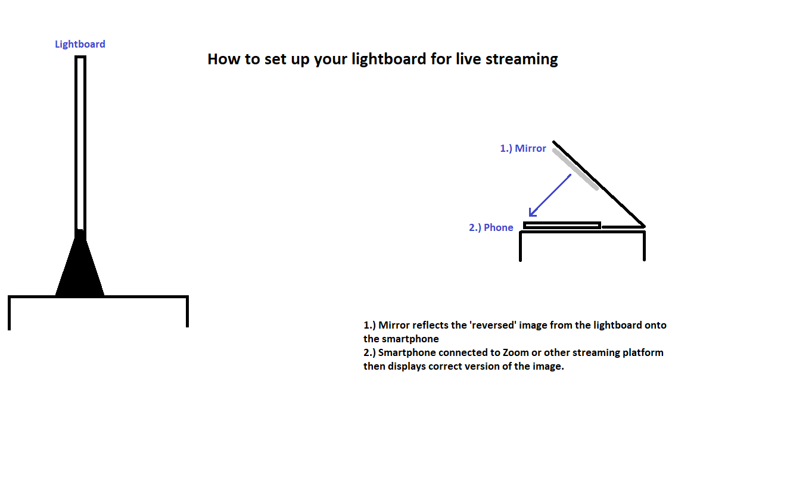
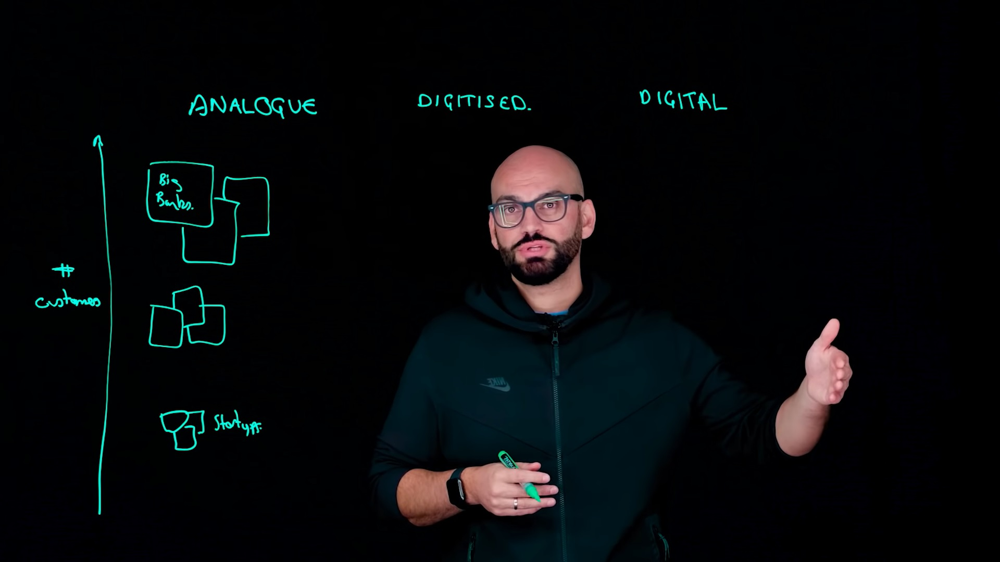

How to Use The Learning Glass
Studio Setup
- The Lightboard is mounted on a motorized table so it can be adjusted to suit the presenter’s height.
- Ideally a blackout studio or a room that is as dark as possible.
- No external lighting needed.
- Lapel microphones used to ensure the presenter’s comfort and a high-quality sound recording.
- Camera setup of 2 cameras allow for a wide and close shots and improved editing purposes however 1 camera will still work very effectively.
- The image is ‘flipped’ in post-production so the text appears the right way around.
- The studio setup works best for the larger learning glass product, find out more about it here!

Live Streaming
- When live streaming in a studio you need to use a decimator.
- This will flip the image as you present causing the graphics to appear the correct way around for audiences.
- Connect to a video streaming platform and start your presentation.
Setup at Home
- Position your learning glass on a desk or table.
- Adjust the height on the learning glass to frame the presenter correctly.
- Shut curtains and blinds and make the room as dark as possible.
- Place your smartphone on the provided stand 70cm distance to film the lightboard.
- The smaller, more portable learning glass product is best for home setups, you can find out more about the product here!
Live Streaming
- When live streaming at home place your phone on the provided stand.
- The mirror will reflect the revered image from the learning glass to your phone.
- Connect the smartphone to a streaming or video calling platform which displays the correct version of the image to audiences.

Lightboard Best Practices
- Wear medium to dark clothing in a solid colour, with no writing, or patterns that will distract.
- Decide where you will write key points, drawings or graphs on the board. (Do not write in front of your face.)
- Use normal gestures and your presentation style.
- Look at camera periodically to encourage perception of eye contact.
- Be Confident! Use your Creativity! Most of all, be yourself!
